1. プロジェクト概要
| システム名称 | ねこぜ家計簿（家計簿＋TODOリスト＋日記） |
|---|---|
| 目的・コンセプト |
日々の家計・TODO、および日記を管理できるWebアプリケーション。 月の予算管理や日割りの使用可能額を可視化し、予算達成時には達成感を感じられる仕掛けを提供する。 |
| 想定技術スタック |
|
1.1. システム処理イメージ（データフロー・処理構成）
| レイヤー | 想定技術 | 主要処理・役割 |
|---|---|---|
| フロントエンド (Webブラウザ) |
HTML5 / CSS3 / JavaScript (ES6+) / Chart.js |
|
| バックエンド (Webサーバー) |
Java (Servlet / JSP / MVC) |
|
| データベース (DBサーバー) |
PostgreSQL |
|
【処理フロー構成図】
graph TD;
subgraph Frontend["フロントエンド (Webブラウザ)"]
UI["HTML5 / CSS3
(画面レイアウト &
ステータスアイコン)"]
JS["JavaScript (ES6+)
(DOM操作 & イベント処理 &
API送信)"]
end
subgraph Backend["バックエンド (Java Web Server)"]
Controller["Servlet / Controller
(リクエスト受付 &
ルーティング)"]
BudgetService["家計簿・集計計算サービス
(日割り残額算出 &
ステータス判定)"]
DAO["DAO / JDBC
(データベースアクセス)"]
end
subgraph Database["データベース (PostgreSQL)"]
DB_User[("USER テーブル
(ユーザー・認証情報)")]
DB_Group[("group_id テーブル
(共有ID管理)")]
DB_Kakeibo[("家計簿入力 テーブル
(収支・費目・モード)")]
DB_Himoku[("費目 テーブル
(費目マスタ)")]
DB_Diary[("日記 テーブル
(日記本文・画像(bytea))")]
DB_Todo[("todo テーブル
(タスク・ステータス)")]
end
%% リクエスト・レスポンスの流れ
UI -->|"① ユーザー操作
(入力 / ボタンクリック)"| JS
JS -->|"② HTTPリクエスト
(JSON / FormData)"| Controller
Controller --> BudgetService
BudgetService --> DAO
DAO --> DB_User
DAO --> DB_Group
DAO --> DB_Kakeibo
DAO --> DB_Himoku
DAO --> DB_Diary
DAO --> DB_Todo
DAO -->|"DBデータ返却"| Controller
Controller -->|"③ HTTPレスポンス
(JSONデータ)"| JS
JS -->|"④ 画面更新
(DOM書き換え / Chart.js再描画)"| UI
2. 画面構成・ルーティング (サイトマップ)
システムの主要画面、対応URL、主要機能、および画面間の遷移仕様一覧です。
2.1. 画面一覧（サイトマップ）
| 画面No. / 画面名 | 対応URL / ファイル | 概要・主要機能詳細 |
|---|---|---|
| 1.1 ログイン画面 | /login( login.jsp) |
メールアドレス・パスワード入力による認証。伏字表示/非表示切替（目アイコン）、秘密の質問画面へのリンク、新規会員登録画面へのリンク。ログイン成功時は「カレンダー(Monthly)個人」へ遷移。 |
| 1.2 ユーザ新規登録画面 | /register( register.jsp) |
ユーザ画像（アイコン8種選択）、名前、メールアドレス（形式・重複チェック）、パスワード（8桁・BCrypt暗号化）、秘密の質問（3択・BCrypt暗号化）、ニックネームの登録処理。 |
| 1.3 秘密の質問画面 | /secret_question( secret_question.jsp) |
メールアドレス入力、秘密の質問選択・回答検証によるパスワード再設定処理。 |
| 2.1 家計簿入力画面 | /kakeibo_input( kakeibo_input.jsp) |
日付、金額、支出種別（収入/固定/変動/投資・貯蓄）、モード（個人/共有）、費目選択（給与、家賃、食費等22種）、メモの入力・登録。 |
| 3.1 カレンダー(Monthly)個人画面 | /calendar/monthly/private |
個人の月次収支一覧・日別合計額表示。当月利用可能残額・本日利用可能額（日割り）の動的計算、ねこステータス表示（寝そべり/姿勢良い/猫背）、月間メモ入力。 |
| 3.2 カレンダー(Monthly)共有画面 | /calendar/monthly/shared |
共有グループの月次収支一覧・日別合計額表示、ねこステータス表示。 |
| 3.3 カレンダー(Day)個人画面 | /calendar/day/private |
選択した日付の個人収支明細一覧・編集・削除。同日の日記（写真・文章）記録・閲覧、TODOタスク表示。 |
| 3.4 カレンダー(Day)共有画面 | /calendar/day/shared |
選択した日付の共有収支明細一覧（各共有ユーザごとの内訳表示）。 |
| 4.1 TODO画面 | /todo( todo.jsp) |
今日やること・買い物リスト等のタスク（TODO・アイデア）追加・編集・削除。完了ステータス切替（チェックボックスによるグレーアウト打消し線表示）。 |
| 5.1〜5.2 年支出ページ［個人・共有］ | /graph/year/private/graph/year/shared |
年間支出データを月別に集計し、グラフ（Chart.js）により可視化。 |
| 5.3〜5.4 月支出ページ［個人・共有］ | /graph/month/private/graph/month/shared |
月間支出データをカテゴリー別・費目別に集計し、グラフ（円グラフ等）により可視化。 |
| 5.5〜5.6 日支出ページ［個人・共有］ | /graph/day/private/graph/day/shared |
日別支出データをカテゴリー別・費目別に集計し、グラフ可視化。 |
| 6.1 設定画面 | /settings( settings.jsp) |
所属共有ID表示、共有ID作成（8桁数値・重複/桁数チェック）、共有ID認証（作成者メールアドレス照合）、ログアウト処理（ダイアログ確認後セッション破棄）。 |
| 6.2 ユーザ情報変更画面 | /user_edit( user_edit.jsp) |
登録済みユーザ情報（アイコン・名前・メール・パスワード・秘密の質問・ニックネーム）の変更・更新処理。 |
| 7.1 ナビゲーションメニュー | 共通コンポーネント | 全画面下部固定メニュー（[TODO][入力][カレンダー][グラフ][設定]）。カレンダー/グラフ押下時にドロップアップサブメニュー表示。現在年月日パラメータの引継ぎ。 |
2.2. 画面遷移ルーティング仕様
| 遷移元画面 | イベント / 操作 | 遷移先画面 | 備考・処理仕様 |
|---|---|---|---|
| ログイン画面 | [ログイン] 成功 | カレンダー(Monthly)個人画面 | セッションスコープに user_id を保持 |
| ログイン画面 | 「パスワードを忘れた方はこちら」 | 秘密の質問画面 | パスワード再設定プロセスへ |
| ログイン画面 | [新規登録] ボタン | ユーザ新規登録画面 | 会員登録フォームへ |
| ユーザ新規登録画面 | [登録する] 成功 | ログイン画面 | 登録完了ポップアップ表示後ログイン画面へ |
| 秘密の質問画面 | [変更] 成功 | ログイン画面 | パスワード更新完了後ログイン画面へ |
| 設定画面 | [ユーザ情報変更] ボタン | ユーザ情報変更画面 | 登録情報を入力済みの状態で初期表示 |
| 設定画面 | 共有ID認証 成功 | ログイン画面 | 「登録が完了したにゃ！」メッセージ表示後ログイン画面へ |
| 設定画面 | [ログアウト] -> ダイアログ [はい] | ログイン画面 | セッションスコープを破棄 (session.invalidate()) |
| カレンダー(Monthly)個人/共有 | 日付セル クリック | カレンダー(Day)個人/共有画面 | クリックした年月日をリクエストパラメータで受渡し |
| ナビゲーションメニュー | アイコン選択（TODO/入力/カレンダー/グラフ/設定） | 各該当画面 / ドロップアップメニュー | サブメニュー選択時は現在画面名を太字強調表示 |
3. 機能要件・ビジネスロジック仕様
3.1. 画面別・機能詳細仕様
| 対象画面 / 機能カテゴリ | 機能名称 | 仕様・要件詳細 |
|---|---|---|
| 1.1 ログイン | 画面表示・遷移機能 |
|
| 認証機能 |
PostgreSQLの USER テーブルを参照し、入力された「メールアドレス」と「パスワード（ハッシュ値）」を照合（BCrypt.checkpw）。セッションスコープにユーザIDを保持。
|
|
| エラーチェック機能 |
・未入力チェック：メールアドレスおよびパスワードが空の場合は不可 ・形式チェック：メールアドレスが「@」を含む適切なフォーマットであること |
|
| ユーザー認証機能 |
テーブル名：USER・ mail_address と password（ハッシュ値）を条件にUSERテーブルを検索
|
|
| 1.2 ユーザ新規登録 | 画面表示・遷移機能 |
全項目設定・入力必須とし、バリデーションチェックを行う。 1. ユーザ画像（8種アイコン：black, blue, green, pink, purple, red, skyblue, yellow） 2. 名前（プレースホルダー：「名前を入力してください」） 3. メールアドレス（形式チェック・DB重複チェック） 4. パスワード（8文字制限・「●」伏字・目アイコン切替・BCryptハッシュ化保存） 5. 秘密の質問（3択：母親の旧姓は？/父親の旧姓は？/生まれた都道府県は？、回答最大24文字・BCryptハッシュ化保存） 6. ニックネーム 7. [登録する]ボタン：正常時はUSERテーブルに登録し「登録が完了したにゃ！」表示後ログイン画面へ遷移 |
| ユーザ登録機能 |
テーブル名：USER にユーザ設定値（アイコン, 名前, メール, パスワード, 秘密の質問・回答, ニックネーム）を登録。create_date（登録日時）を自動更新。
|
|
| 1.3 秘密の質問 | 画面表示・遷移機能 |
登録済みの「メールアドレス」「秘密の質問」「秘密の質問の答え」「新しいパスワード」を入力。 [変更する]ボタン押下でバリデーションチェック。正常時はパスワードをハッシュ化更新し「登録が完了したにゃ！」表示後ログイン画面へ遷移。 |
| 認証機能 |
USER テーブルを検索し、メールアドレス、秘密の質問、秘密の質問の答え（BCrypt照合）が一致することを認証。
|
|
| パスワード更新機能 |
認証成功時、USER テーブルの password を新しいパスワードのハッシュ値で更新。
|
|
| 2.1 家計簿入力 | 画面表示・遷移機能 |
・日付入力（初期値：現在年月日） ・金額入力（単位「円」、半角数字のみ、0円不可） ・支出種別選択（ラジオボタン：「収入」「固定」「変動」「投資・貯蓄」） ・モード選択（ラジオボタン：「個人」「共有」） ・費目選択（ドロップダウン：給与、家賃、ガス代、電気代、水道代、通信費、保険料、教育費、固定その他、美容費、医療費、食費、被服、交際費、交通費、日用品、趣味、経費、変動その他、投資、貯蓄等の22種） ・メモ入力（プレースホルダー：「メモを入力」） ・[保存する]ボタン押下でバリデーションチェック実行後保存 |
| 登録機能 |
テーブル名：家計簿入力 に家計簿ID(自動採番), ユーザID(セッション), 日付, メモ, 金額, 支出種別(0:収入 1:固定 2:変動 3:投資・貯蓄), モード(0:個人 1:共有), 費目ID を登録。
|
|
| エラーチェック機能 |
・必須チェック（金額、カテゴリ、費目）モーダル表示 ・金額チェック（0円以下や全角文字入力時は「金額が不正です。」表示） |
|
| 3.1〜3.4 カレンダー | 画面表示・計算機能 |
・月次カレンダー表示（日ごとの支出合計額表示、日付押下でDay画面へ遷移） ・ 当月利用可能残額 = 当月予算 - 当月累計支出・ 本日利用可能額（日割り） = 当月利用可能残額 / 当月残日数（本日含む）・残使用可能額・日割り計算式: ・ 残り使用可能額 = 当月収入 - (当月固定支出 + 当月変動支出 + 当月投資・貯蓄)・ 当月残日数 = 本日（システム日付）から当月末日までの日数（本日を含む）・ 日割り残額 = 残り使用可能額 ÷ 当月残日数（円未満切り捨て）・ねこステータス判定（計算式・基準）: 日割り予算に対する本日の使用率（③）を以下計算式で算出： ① 基準値 = (当月の収入 - 固定支出 - 投資・貯蓄) ÷ 当月日数 ② 日割り残額 = 残り使用可能額 ÷ 当月残日数（円未満切り捨て） ③ 本日使用率 = ② ÷ ① 算出した本日使用率（③）に応じたステータス画像を表示： ・ 0% 〜 70% 未満：良い (1.nesoberi.gif / nesoberi.png)・ 70% 〜 100% 以下：普通 (2.shiseiyoi.gif / shiseiyoi.png)・ 100% 超（予算オーバー）：悪い (3.nekoze.gif / nekozeold.png)・月間メモ機能、Day画面での日記（写真・文章）記録、TODOタスク表示 |
| 共有カレンダー表示 |
共有グループ（group_id）に所属する全ユーザの家計簿入力データ（モード=1:共有）を集計し表示。各ユーザ別の内訳表示に対応。
|
|
| 4.1 TODO | 画面表示・管理機能 |
・今日やること・アイデア・TODOステータス（未完了/完了）の管理 ・チェックボックスによる完了判定（完了時はテキストをグレーアウト打消し線表示） ・テーブル名： todo に保存
|
| エラーチェック機能 | 未入力時のバリデーション処理 | |
| 5.1〜5.6 支出分析グラフ | 集計・可視化機能 | 年・月・日×個人・共有の6パターンで支出データを集計し、Chart.js等のグラフライブラリを用いてカテゴリー別・費目別の割合を動的描画。 |
| 6.1 設定 & 共有ID | 画面表示機能 | 所属共有ID表示、共有ID作成エリア、共有ID認証エリア、ログアウトボタンの表示。 |
| 共有ID作成機能 |
・共有ID（8桁数字）を自動または手動生成しテーブル group_id に登録。・ created_by に作成者の user_id を保存。・桁数チェック（8桁未満不可）および重複チェック（他IDと重複不可）を実行。 |
|
| 共有ID認証機能 |
・入力された「共有ID」と「作成者のメールアドレス」で照合認証。 ・認証成功時、ログインユーザの USER テーブルの group_id を更新し、「登録が完了したにゃ！」表示後ログイン画面へ遷移。
|
|
| ログアウト機能 |
・押下時に確認ダイアログ表示（「ログアウトしますか？」[はい][いいえ]）。 ・[はい]押下でセッションスコープ破棄 ( session.invalidate()) しログイン画面へ遷移。
|
|
| 6.2 ユーザ情報変更 | 更新機能 |
既存のユーザ情報を入力済み状態でフォーム表示し、変更保存ボタンで USER テーブルの登録データを更新。
|
| 7.1 ナビゲーションメニュー | 共通UI・ルーティング機能 |
・全画面下部に固定表示（[TODO][入力][カレンダー][グラフ][設定]）。 ・カレンダー・グラフ押下時にドロップアップサブメニューを表示。 ・画面遷移時にリクエストパラメータで現在年月日を受け渡し。現在表示画面を太字で強調。 |
3.2. 入力UI・バリデーションチェック仕様
| チェック項目 | 対象画面 / 形式 | エラーメッセージ・挙動仕様 |
|---|---|---|
| 未入力・必須チェック | 全画面（ログイン、会員登録、入力、設定等） | テキストボックス下またはモーダルにて「入力してください」「設定してください」等の赤字エラー表示。 |
| 桁数・文字数制限 | パスワード (8桁), 共有ID (8桁), 秘密の質問回答 (24文字以内) | 8桁未満または範囲外の場合は「8ケタで入力してください」等の赤字エラー表示。 |
| メールアドレス形式チェック | ログイン、会員登録、秘密の質問、設定 | 「@」を含む適切なフォーマットでない場合「使用できないメールアドレスです」表示。 |
| データ重複チェック | 会員登録（メールアドレス）、設定（共有ID） | 「他のIDと重複しています」等のエラーを表示し登録不可とする。 |
| 数値・金額チェック | 家計簿入力（金額） | 0円以下の数値、全角文字入力時は「金額が不正です。」表示。 |
| セキュリティ・暗号化処理 | パスワード、秘密の質問の答え |
BCrypt.checkpw メソッド等を用い、DB保存時は必ずハッシュ化して安全に保持する。
|
3.3. DB要件（テーブル設計）
PostgreSQLデータベースのテーブル定義構成です。（テーブル定義書(ねこぜ家計簿).xlsx 準拠）
| テーブル名 | 物理名 | カラム定義 (物理名: 型 / 制約 / 説明) |
|---|---|---|
| 共有ID | group_id |
group_id: CHARACTER(8) (PK, NOT NULL, 共有ID)created_by: INTEGER (NOT NULL, 作成した人)
|
| TODO | todo |
id: SERIAL (PK, NOT NULL, TODOid)user_id: INTEGER (NOT NULL, ユーザID)todo: TEXT (今日やること)idea: TEXT (アイデア)status: BOOLEAN (DEFAULT false, TODOステータス: false:未完了 true:完了)
|
| USER | USER |
user_id: SERIAL (PK, NOT NULL, ユーザID)user_icon: BYTEA (アイコン)user_name: VARCHAR(255) (NOT NULL, 名前)mail_address: VARCHAR(256) (NOT NULL, メールアドレス)password: VARCHAR(8) (NOT NULL, パスワード)secret_question: VARCHAR(255) (NOT NULL, 秘密の質問)secret_answer: VARCHAR(72) (NOT NULL, 秘密の質問の答え)nickname: VARCHAR(255) (NOT NULL, ニックネーム)create_date: TIMESTAMP(6) WITHOUT TIME ZONE (NOT NULL, DEFAULT CURRENT_TIMESTAMP, 登録日時)group_id: CHARACTER(8) (NOT NULL, 共有ID)
|
| 家計簿入力 | 家計簿入力 |
id: SERIAL (PK, NOT NULL, 家計簿ID)user_id: INTEGER (NOT NULL, ユーザID)date: DATE (NOT NULL, 日付)memo: TEXT (メモ)yen: NUMERIC(10) (NOT NULL, DEFAULT 0, 金額)category_type: VARCHAR(50) (NOT NULL, 支出種別: 0:収入 1:固定 2:変動 3:投資・貯蓄)mode: BOOLEAN (NOT NULL, DEFAULT false, モード: 0:個人 1:共有)himoku_id: INTEGER (NOT NULL, 費目ID)
|
| 日記 | 日記 |
id: SERIAL (PK, NOT NULL, 日記id)user_id: INTEGER (NOT NULL, ユーザID)date: DATE (NOT NULL, 日付)photo: BYTEA (画像)content: TEXT (日記)
|
| 費目 | 費目 |
himoku_id: SERIAL (PK, NOT NULL, 費目ID)category_name: VARCHAR(50) (NOT NULL, 費目: 0:給与 1:収入その他 10:家賃 11:ガス代 12:電気代 13:水道代 14:通信費 15:保険料 16:教育費 17:固定その他 30:美容費 31:医療費 32:食費 33:被服 34:交際費 35:交通費 36:日用品 37:趣味 38経費 39変動その他 50:投資 51:貯蓄)user_id: INTEGER (NOT NULL, ユーザID)
|
4. 画面イメージ
各画面のレイアウト画像一覧です。
4.1 ログイン画面
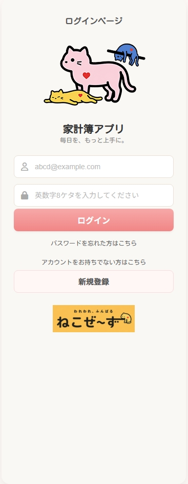
4.2 ユーザ新規登録画面
4.3 秘密の質問画面
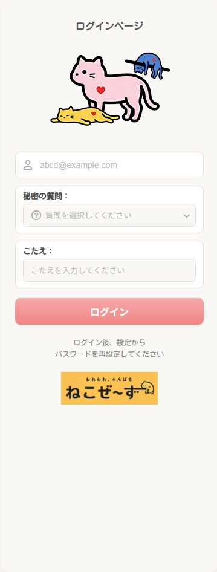
4.4 家計簿入力ページ
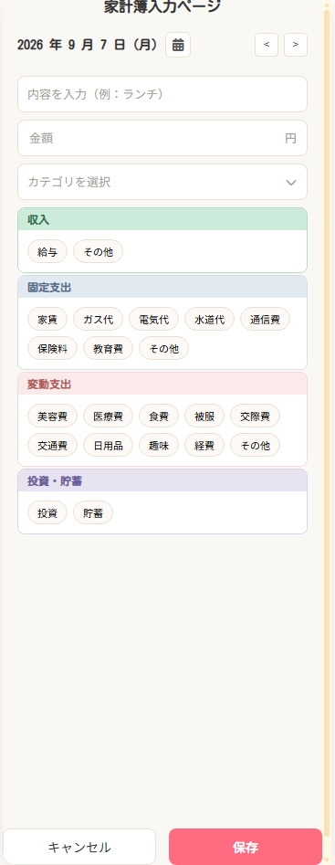
4.5 カレンダー(Monthly)個人画面
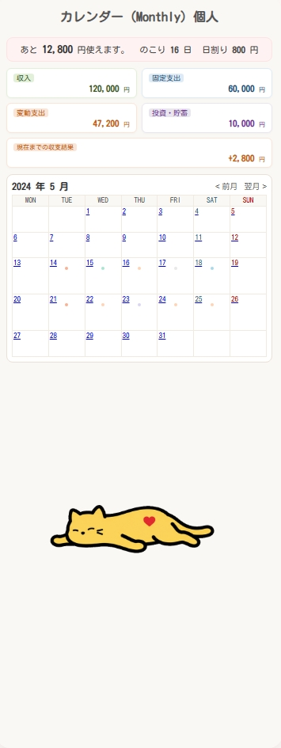
4.6 カレンダー(Monthly)共有画面
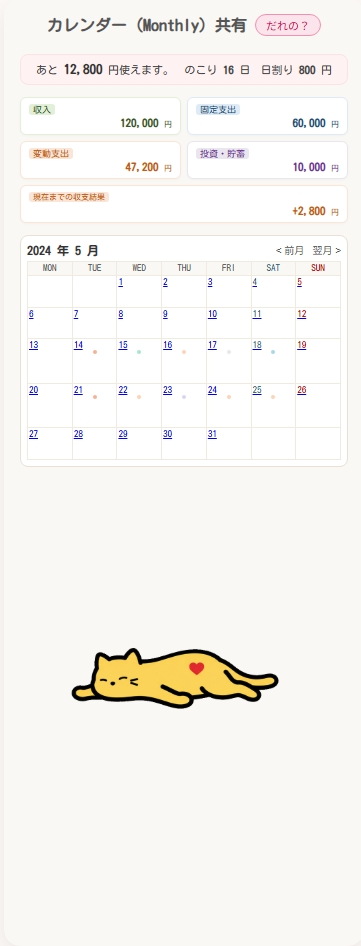
4.7 カレンダー(Day)個人画面
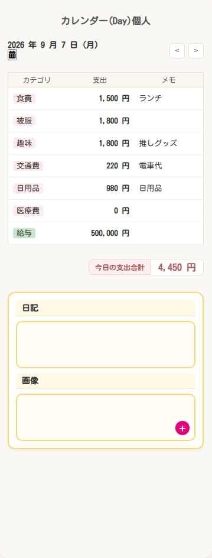
4.8 カレンダー(Day)共有画面
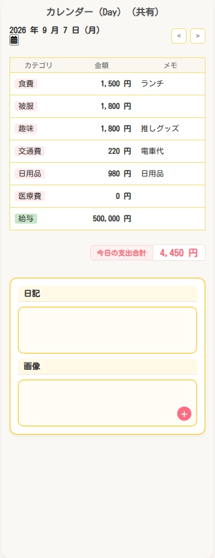
4.9 TODO画面
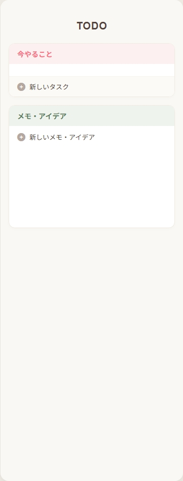
4.10 年支出ページ (個人)
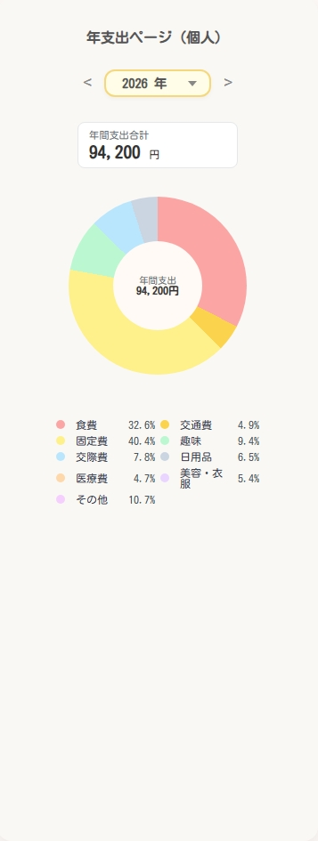
4.11 年支出ページ (共有)
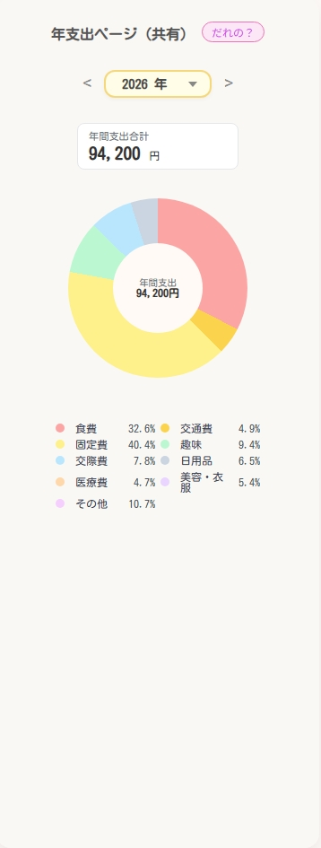
4.12 月支出ページ (個人)
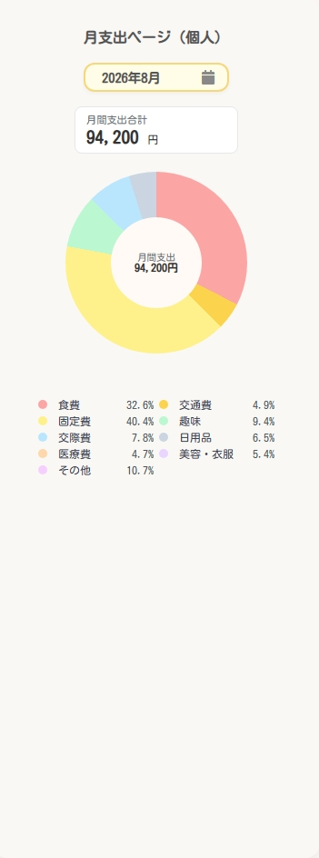
4.13 月支出ページ (共有)
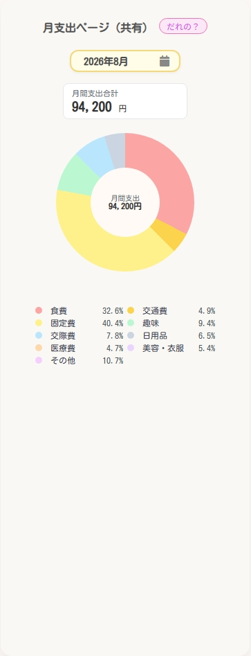
4.14 日支出ページ (個人)
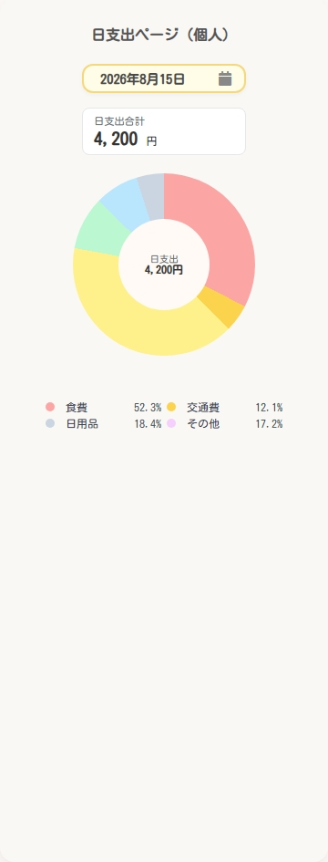
4.15 日支出ページ (共有)
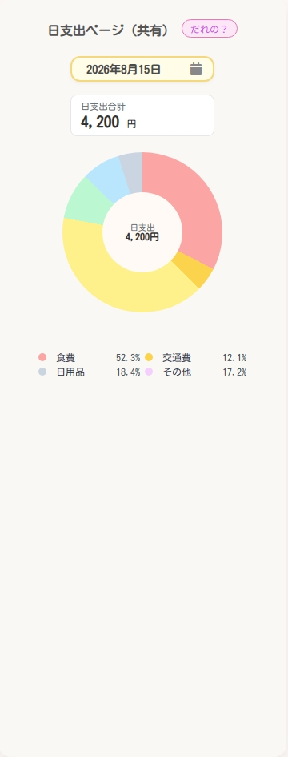
4.16 設定画面
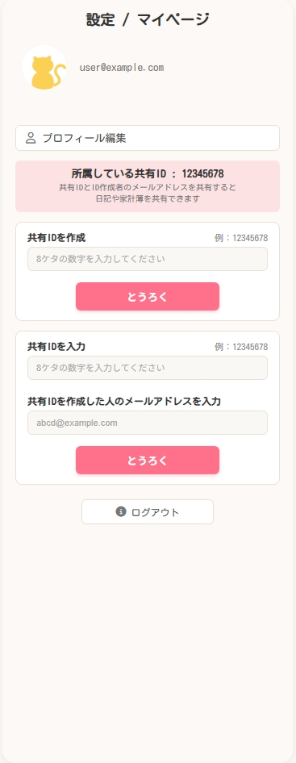
4.17 ユーザ情報変更画面
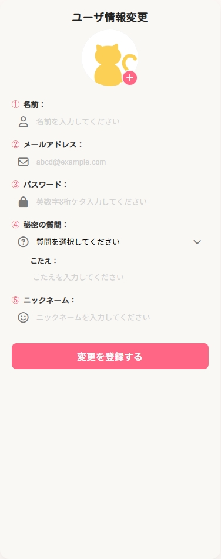
4.18 ナビゲーションメニュー
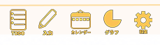
5. ステータス画像
予算の使用状況に応じて表示されるアニメーションGIFの一覧です。
| ステータス | GIF画像 |
|---|---|
| 良い (使用率 ≤ 70%) | |
| 普通 (70% < 使用率 ≤ 100%) | |
| 悪い (使用率 > 100%) |
5. アイコン画像
ユーザが選択できるアイコンの一覧です。
| 色 | アイコン画像 |
|---|---|
| 黒 | |
| 青 | |
| 緑 | |
| ピンク | |
| 紫 | |
| 赤 | |
| 水色 | |
| 黄色 |